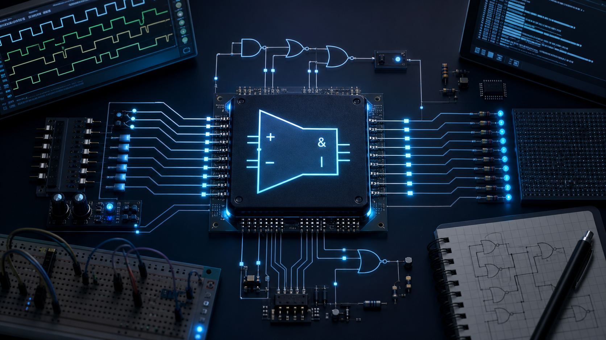

Iverilog ALU
A small self-directed Verilog project I built while studying for my electives, after using videos and practice examples to teach myself the basics of hardware description.
Hardware / Digital Logic
Overview
While preparing for elective coursework, I decided to learn Verilog on my own and chose a small ALU as a practical first build. It gave me a focused way to connect digital logic concepts with real hardware-description syntax and simulation.
Technical Focus
The work centers on Verilog module design, operation selection, signal flow, and repeatable simulation using Icarus Verilog tooling.
Build Notes
- Arithmetic and logical datapath behavior
- Simulation-first validation workflow
- Testbench-driven checks for expected ALU outputs
Repository
Source files and simulation materials are available in the public GitHub repository.